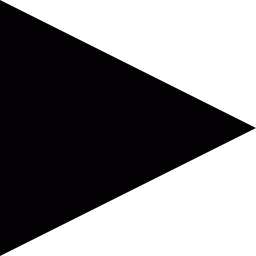

You can leave the editor window at any time by pressing 
You can close this help window at any time by pressing
To create a new commodity, press +. When you have created it, you can edit its details in the table above.
Or, you can load a simulation that has already been defined, and
either modify it or simply run it, to see what it does.
A commodity is anything that is bought and sold. Some theories adopt stricter definitions; this App has space for you to provide your own definition.
It distinguishes four types of commodities. A commodity is either destined to be consumed, in which case its function is a Consumer Good, or to be used to produce other commodities, in which case its function is a Productive Input.
A commodity can either be produced by an industry, in which case its origin is Industrial, or it can be produced by a social class, in which case its origin is Social. A commodity may not be produced at all, for example some types of money.